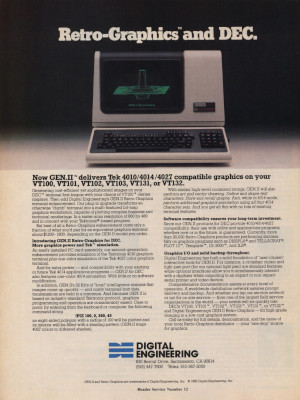
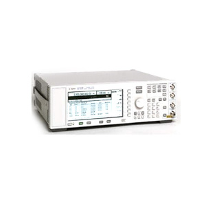
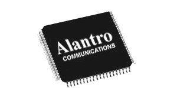
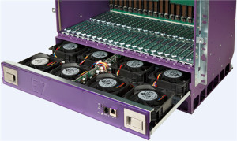

Digital Engineering Retro-Graphics, 1979 - 1985
Travel and Skiing, Mt Chacaltaya Bolivia 5,375m, many others, 1986 - 1996

Hewlett-Packard ESG Signal Generator, 1997 - 2000

Alantro Communications First Wireless Ethernet 802.11 IC, 1999 - 2000

Calix Network Concentrator, 2000 - 2002
Bally Technologies Stepper Bonus Games, 2002 - 2019